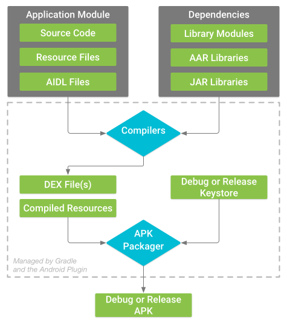
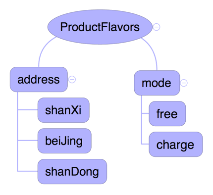
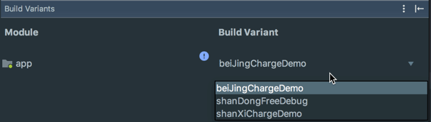
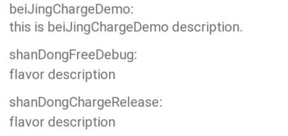
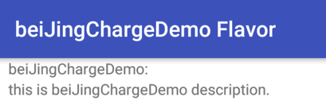
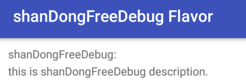
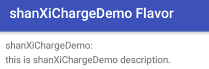

在编译打包 Android apk 时，根据不同的情况需要提供不同的功能，打包不同版本的 apk，例如免费版本和收费版本等等。而 Gradle 和 Android 插件的 productFlavors 可以轻松的搞定这一切。
Android构建系统编译源代码，整合依赖以及资源，然后将它们打包成你需要的APK。Android Studio 提供了 Gradle 工具来自动化执行和管理构建。Gradle工具允许自定义构建配置或者其它内容。
构建流程
构建流程即把 Android 项目资源打包成apk的过程。起主要流程如下：

- 编译器把 Source Code以及依赖 Dependencies 转换成可以在 Dalvik 虚拟机上执行的DEX ( Dalvik Executable ) 文件，包含运行在 Android 设备上的字节码，将 Resource Files，AIDL Files 转换成已编译资源；
- APK 打包器将DEX文件和已编译资源合并成单个APK文件，并根据配置及签名文件进行签名；
- 利用 zipalign工具进行优化，减少在设备上运行的内存占用；
几个概念
构建类型
构建类型定义 Gradle 在构建和打包您的应用时使用的某些属性，通常针对开发生命周期的不同阶段进行配置。例如设置不同的 applicationId、代码混淆文件、不同的签名文件等等。Android Studio 默认有debug和release两个构建类型，如果非 Android Studio 则需要至少一个构建类型才能构建应用。
产品风味
在构建流程中的compile之前，Android Gradle 插件会根据用户或者运营商等不同区分发布不同的用户版本，例如免费版本和收费版本。产品风味的主要目的是对所有版本共有的代码、资源等部分重复利用，对不同的代码或资源加以区分和自定义。而且产品风味需要手动创建。
构建变体
构建变体不需要手动创建，只需配置产品风味和构建类型即可，是属于构建类型和产品风味交叉的产物，是 Gradle 在构建应用时使用的配置。
配置构建变体
构建类型和产品风味一般在模块级的 build.gradle文件的 android{}代码块中配置。构建类型在buildTypes{}代码块中配置，而产品分风味的配置在productFlavors{}代码块中。
配置构建类型
当新建一个工程时，Android 插件会默认添加debug和release两种构建类型，在buildTypes{}代码块中只显示了release，debug构建类型虽然被隐藏，但其实是存在的。在构建类型中可以改变代码混淆文件，ApplicationIdSuffix等其它的一些属性。以下是默认的两个构建类型，并在此基础上添加了新的构建类型Demo:
android { |
上述代码一共配置了三个构建类型，分别为默认的debug和release，以及自定义的demo构建类型，并设置了不同的属性，包括 applicationIdSuffix，shrinkResources，minifyEnabled等属性，当然还可以配置其它的属性，具体见构建类型配置。
配置产品风味
在新建 Android 工程的时候，Android Gradle插件会新建两个构建类型，但是不会默认添加产品风味。产品风味需要手动去添加配置。配置位置为 Module 目录下的 build.gradle文件中的android{}代码块中的productFlavors{}代码块。defaultConfig实际上也是属于productFlavor类，因此可以在productFlavors{}可以配置和defaultConfig相同的属性。因此可以在defaultConfig中配置所有产品风味共同的属性，在各自的产品风味中添加差异的属性或者更改默认属性。
在添加产品风味时可以从不同的维度上区分每个产品风味，可以定义为：
Android Gradle 插件在3.0版本之后需要为每个产品风味添加一个维度dimension，否则在同步的时候会报：Error:All flavors must now belong to a named flavor dimension 错误。
定义产品风味两个维度，分别为address和mode，address维度下的产品风味有shanxi，beijing，shandong，mode维度下有free和charge，如下图：

代码如下：
android { |
则构建类型和产品风味交叉后得到的构建变体以及对应的APK为：
- 构建变体:
[shanXi, beiJing, shanDong][free, charge][Debug, Release, Demo]，共有18种; - 对应APK：
app-[shanXi, beiJing, shanDong]-[free, charge]-[Debug, Release, Demo].apk
过滤变体
假设要保留上述18种构建变体中的beiJingChargeDemo和shanDongFreeDebug以及shanXichargedemo三种变体，过滤代码如下：
android { |
运行结果如下：

配置源集
当配置了构建类型和产品风味之后 Android Studio不会直接新建源集目录，需要手动新建目录。
查看当前源集：
./gradlew sourceSets # 查看构建变体源集 |
以shanXichargedemo构建变体为例，默认源集为：
shanXichargedemo |
可以看出构建变体、构建类型、产品风味对应的源集默认为app/src/<构建变体名/构建类型名/产品风味名>目录下。因此如果使用默认的源集，则只需要创建对应的文件夹即可，如果需要指定源集，则可在android{}代码块中新建sourceSets{}代码块，在其中指定特定的目录。例如把shanDongChargeRelease构建变体的java源文件目录指定为app/src/shanDongChargeReleaseSpecialDir
android { |
则再次查看源集可以看到输出如下：
shanDongChargeRelease |
配置依赖
在配置依赖的dependencies代码块中除了默认生成的一些依赖项以外还可以自己添加特定的依赖：
-
依赖一个二进制jar包：
implementation files('<file/to/path>'); -
依赖一个工程：
compile project(":mylibrary"); -
对某个特定的构建变体、源集名称配置依赖：
chargeDemoCompile project(path: ':library', configuration: 'debug')
chargeReleaseCompile project(path: ':library', configuration: 'release')
构建多版本APK
进行多版本区分有以下三种方法：
- 定义宏，通过宏去控制代码逻辑；
- 通过对BuildConfig中得变量
FLAVOR的值进行代码逻辑判断； - 通过分离接口的方法；
以beiJingChargeDemo和shanDongFreeDebug以及shanXiChargeDemo构建变体为例，在app/src目录下分别新建和构建变体相同名称的文件夹，每个文件夹下新建java和res文件夹，并根据所需建立宏文件、接口文件以及资源文件，目录结构如下所示：
. |
主界面的布局只有简单的6个 TextView ，分别显示每个构建变体的名字和描述，每个构建变体只显示其中的一组，隐藏其它变体相关的 TextView。布局如下：

对于资源文件，每个变体下的资源文件会覆盖main下的资源文件，比如strings.xml。
对于beiJingChargeDemo来说，使用宏进行区分，在该变体下的BjcdFeature.java文件，定义是否显示 Layout 的变量：
public static final boolean LAYOUT_DISPLAY = true; |
而另外两个变体的变量则设置为false，在源代码种通过如下方式区分：
// beiJingChargeDemo |
运行结果如下：

对于shanDongFreeDebug来说通过 BuildConfig.FLAVOR值来进行判断，代码逻辑如下：
// shanDongFreeDebug |
运行结果如下：

对于shanDongChargeRelease变体来说，通过分离接口的方法，在该变体源集目录下新建类ProductFlavorDemo，内部只有一个方法：
public static boolean isShowLayout() { return true; } |
对于另外的两个变体的方法直接返回false。代码逻辑如下：
// shanXiChargeDemo |
运行结果如下：

本文代码示例：ProductFlavorDemo